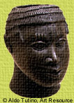
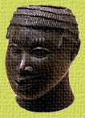

|
 In recent days, I have heard from slaves who work as porters in the market at Begho about a place east of here called Benin. These slaves come from a place called Gwato, a European post some 20 miles distant from Edo, the capital of Benin. The slaves tell me that merchants in Gwato trade many things, including peppers, cloth, and brass figures. These brass figures are said to have come from a place called Ife and celebrate the power of Benin's kings and the greatness of their kingdom.
 The leaders of Benin are very happy about the arrival of the Europeans, because it gives them a new source for the copper that they need to make brass. The Europeans, though, are not interested in trading their copper for brass figures. No, they want slaves to sell for the gold they can get at El Mina. And so every year the kings of Benin send hundreds of captives to Gwato in order to trade with the Europeans.
|